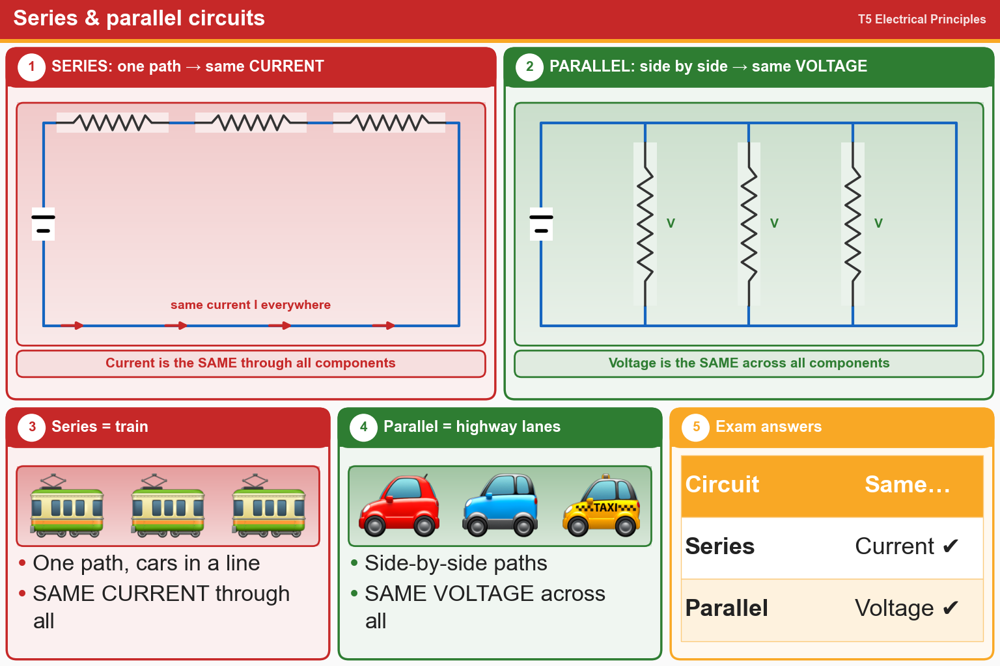

💡 Series = same Current. Parallel = same Voltage.
Tap an answer to check it.
T5D13
In which type of circuit is the current always the same through all components?
✘A.Parallel
✘B.Resonant
✔C.Series
✘D.Branch
T5D14
In which type of circuit is the voltage always the same across all components?
✘A.Series
✔B.Parallel
✘C.Branch
✘D.Resonant